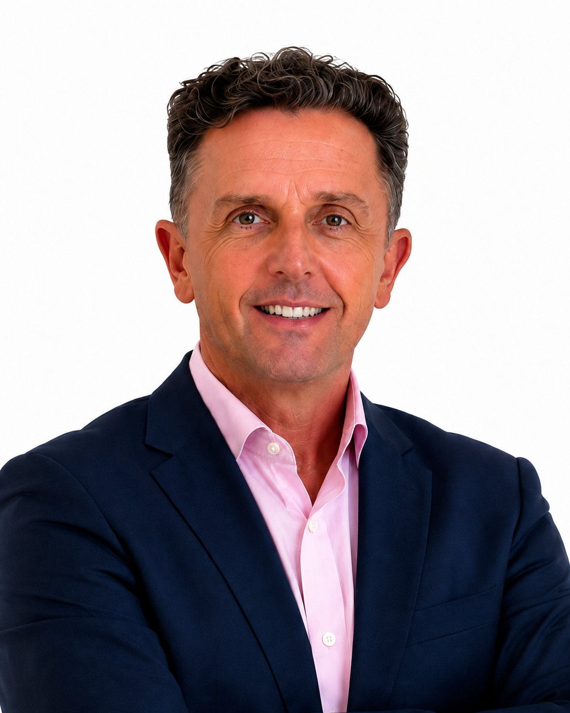
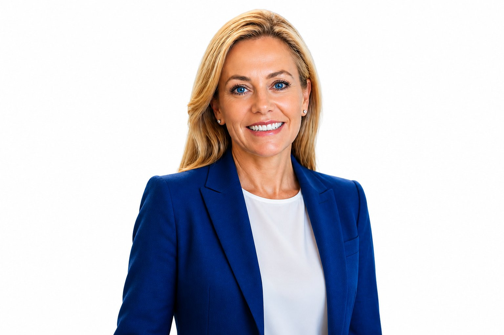
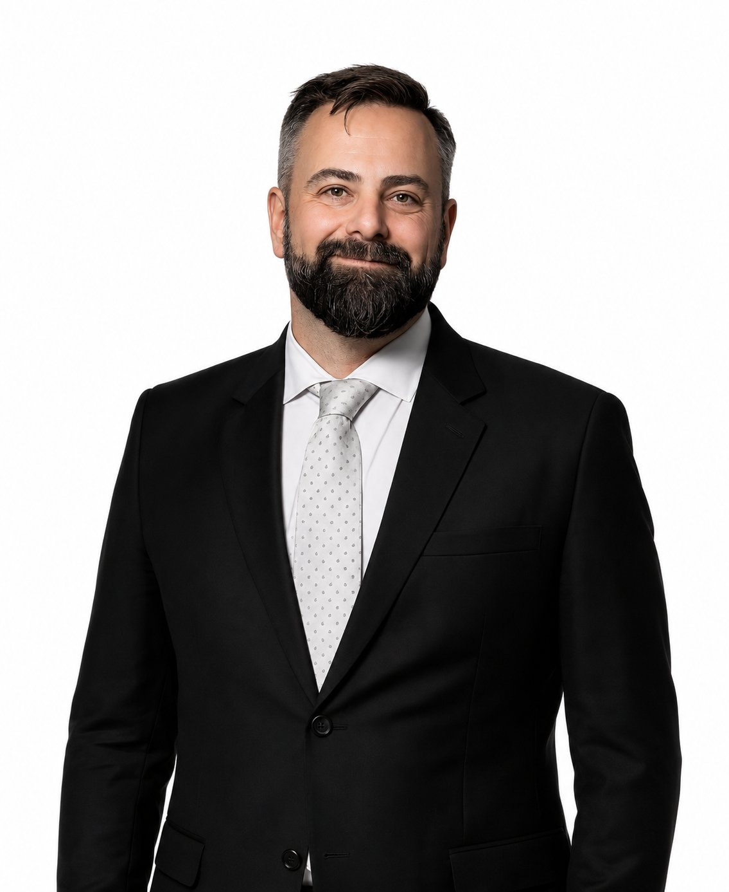
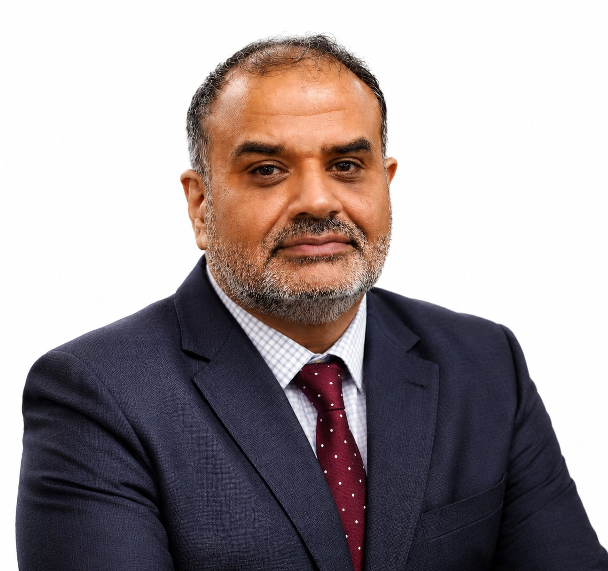
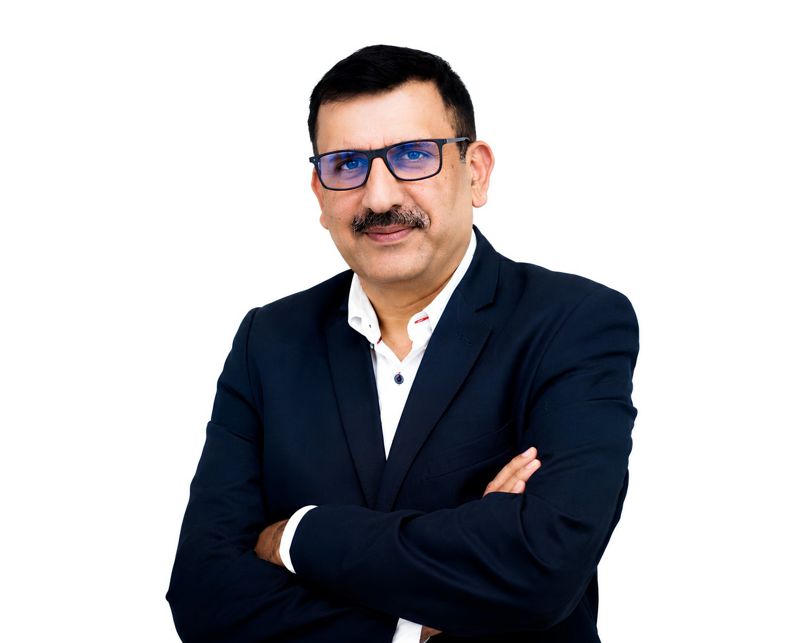

Leadership
Recognised expertise. Direct ownership. Leadership that carries into execution.
Domain leaders with the authority to move decisions forward. Each leader is aligned to a critical domain. Each engagement begins closer to the issue because the right expertise is already in the room.
Every leader at EIG is a recognised authority in their domain. No layers. No account managers. Direct access to the expertise that matters.
KE
'">Architecture
Keith Elliott
Architecture & Interior Design Lead
Environment, workplace, and performance aligned. Keith connects strategic intent to architecture, interior design, and spatial outcomes that support long-term value.
Workplace strategyArchitectureInterior designSpatial planning
Read full bio

PMSupply Chain
Dr. Patrick McCrudden
Supply Chain & Process Lead
Global supply chain expertise. Operational control. Strategic value. Dr Patrick brings decades of international leadership across procurement, logistics, value chains, and complex operating environments.
Supply chain strategyGlobal value chainsProcurementOperations leadership
Read full bio

Agentic AI & IT
Lisa Warren
Director, AI & Ecosystem Intelligence
AI strategy with commercial intent. Lisa helps organisations turn agentic AI, digital transformation, and enterprise technology into practical business advantage.
Agentic AI strategyEnterprise adoptionDigital transformationGrowth execution
Read full bio

Sustainability
Ivano Iannelli
Director, ESG and Climate Intelligence
Sustainability with economic logic. Ivano helps organisations connect sustainability, ESG, decarbonisation, and resilience to measurable business value.
Sustainability strategyESG value creationCarbon marketsTransition planning
Read full bio

BLEducation
Dr. Bill Lehal
Education Lead
Institutional quality. Strategic growth. Student outcomes. Dr Bill helps education organisations strengthen performance, improve quality, and define practical pathways for growth.
Institutional strategyQuality assuranceCapability developmentTransformation support
Read full bio
AJ
'">Strategic Planning
Dr. Alex Jones
Strategic Planning Lead
Leadership clarity. Strategic direction. Better decisions. Dr Alex helps organisations sharpen priorities, align leadership, and turn strategic intent into focused execution.
Strategic directionExecutive alignmentGrowth prioritiesDecision support
Read full bio

MMHealthcare
Dr. Manish Mehrotra
Healthcare Lead
Clinical depth. Operational insight. Healthcare transformation. Dr Manish brings decades of experience across medicine, healthcare operations, governance, and strategic project delivery.
Healthcare strategyClinical governanceService transformationHospital planning
Read full bio
CM
'">Information Technology
Christopher Morley
Director, IT
Technology that holds under pressure. Christopher helps organisations build resilient IT infrastructure, strengthen systems governance, and align technology investment with business priorities.
IT infrastructureSystems governanceTechnology strategyOperational resilience
Read full bio